Developing Keen
Agent and OTLP protocol
Chapter 5 of 6
Keen Agent protocol and persistence
The agent is a separate Go module that sends signed Universal Evidence Utility (UEU) envelopes over OTLP/HTTP JSON to a receiver inside the Keen API. This chapter describes both ends of that contract and the tests that protect it.
The module is keen-agent/; its docs/evidence-format.md specifies Keen's UEU profile (0.1-keen), request signing and the enrolment protocol. internal/ueu builds, canonicalises (RFC 8785), chains and signs envelopes, and internal/agentauth holds the Ed25519 identity, enrolment, renewal and RFC 9421 request signing. Configuration is strict YAML; file readers use directory-relative, no-symlink opens and regular-file checks; journal reads call the fixed /usr/bin/journalctl binary with validated arguments; parsers have no script hooks or remote execution channel. Protobuf/gRPC, metrics and traces are outside this receiver's scope (the OTLP contract, limits and alternate collectors).
The receiver
app/security/agent_signatures.py parses and verifies request signatures, batch manifests and key proofs with cryptography's Ed25519. app/agents/credentials.py authenticates a request before its body is read: it parses the covered headers, checks the operation and the five-minute window, verifies the signature with the agent's active key and records the nonce in Valkey (failing closed). The route then reads a bounded body, checks it against the signed Content-Digest, and the service takes the agent row lock and rechecks the key, so revocation, renewal and ingestion serialise on that lock. Bearer tokens authenticate only identities registered as token collectors.
app/agents/otlp.py splits a request into UEU resources and ordinary log records. app/agents/ueu/ holds the strict canonical parser (duplicate names, non-integers and lone surrogates are refused), the envelope validator and the catalogue loader; app/services/ueu_evidence.py verifies each resource's manifest, places envelopes in the agent's chain, applies catalogue-aware redaction with a custody record and stores each envelope with store_event_with_artifact(commit=False) and a ueu_evidence provenance row, so the whole request commits together.
Going deeper: trust boundaries, storage and digests
Agent registration is session-admin only. Only the exact log, heartbeat, enrolment and renewal paths bypass browser session and CSRF handling, and each has its own authentication. The registered name supplies the trusted Keen event system; envelope source and asset blocks are producer claims, except that a key identity's envelopes must name the agent as their producer and stream.
The evidence hash covers the canonical envelope as the agent produced it. When Keen's redaction changes nothing, the stored artifact is those exact bytes; otherwise the custody record keeps the original hash and lists each changed path. Batch manifests and signatures are kept in ueu_batches and removed by retention once no stored evidence names them. Each artifact persistence attempt gets a fresh object key; storage and PostgreSQL do not share a transaction, so a failed database transaction can leave an unreferenced artifact for retention-aware cleanup.

Diagram source (Mermaid)
flowchart TB
L["Logs, journal or posture probes"] --> P["Recognise, minimise and redact"]
P --> Q["Seal envelope: evidence ID, hash chain and checkpoint in one local transaction"]
Q --> T["Sign batch manifest and request; send OTLP JSON over verified HTTPS"]
T --> A{"Request signed by the agent's current key?"}
A -->|Yes| V{"Envelopes canonical, valid for their catalogue and listed in the signed manifest?"}
V -->|Yes| D{"Evidence ID already stored?"}
D -->|Same hash| OK["Return success"]
D -->|New| S["Record chain position, redact with custody record, store artifact and event; commit"]
S --> OK
OK --> R["Remove acknowledged envelopes from the queue"]
A -->|No| H["Pause delivery; retain envelopes"]
V -->|No| H
D -->|Different hash| H
T -->|Network error or retryable response| B["Back off and retry the same envelopes"]
B --> T
Test ingestion and mapping changes
Run the Go race tests and vet checks with make test in the agent module. services/api/tests/fixtures/ueu-vectors.json holds byte-exact vectors generated by the agent's tests (an envelope, its hash, a signed manifest, a pseudonym and a signed request); test_ueu_evidence.py requires Keen to reproduce them and covers enrolment, request replay and redirection, batch signatures, catalogue checks, chains, custody, evidence modes, renewal and verification bundles, using the protocol client in tests/ueu_agent.py. test_keen_agent.py covers bearer-token collectors: authentication, expiry, revocation, whole-batch rollback, duplicate and conflicting UUIDs, compression and body limits, redaction and plain-language mismatch explanations. Keep source mappings under tests in test_managed_configuration.py and test_integration_builder.py.
Before release, test your real PostgreSQL and storage backend, reverse proxy, Valkey failure behaviour and the target distribution's journal and log permissions. Exercise credential expiry, an unavailable receiver, an inode rotation and a full queue, then inspect a captured event, its retained artifact and its selected control mapping. Documentation diagrams have editable Mermaid sources under portal/docs/help-source/diagrams/; rendered SVGs ship locally with the help pages.